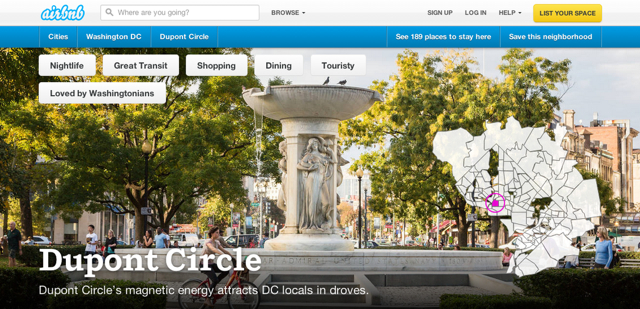

I had the distinct privilege of attending Copyblogger’s first ever conference, Authority Intensive. As promised, the two days were chock full of inspiration and information.
Beginning with Seth Godin’s witty and insightful keynote – I glanced around to see a few attendees actually tearing up when he came on stage – and ending with Bryan Eisenberg’s chronicle of how Amazon built an infrastructure for innovation and longterm success, this conference seriously rocked.
Each and every presenter brought something beyond extensive knowledge to the stage: intense passion.
I learned a ton – and wrote pages of notes and ideas – but these seven items really stuck out. I’m grazing the surface here, but hopefully this gives you an idea of how powerful a great conference can be.
1. Industrialization sucks, but it’s an opportunity.
Seth Godin: “Industrialized content sucks.”
Now that everyone – including the corporate juggernauts – wants content, the industrialization movement has begun. While we’ve moved beyond link farms and content spinning, equally crappy processes have evolved in boardrooms around the world designed simply to satisfy quarterly metrics reports. It’s unfortunate, but it’s also an opportunity.
Don’t ask “How can I get more clicks” rather “How can I earn more trust?” – Seth Godin #Authority2014
– Jimmy Daly (@jimmy_daly) May 8, 2014
For those willing to create art rather than blog posts, there is a world of eager readers and raving fans waiting to join your tribe. Establishing trust, rather than chasing clicks, means content producers never have to compete with industrialized content. A few other great quotes from Seth:
- Invent a car before roads, gas stations and 24-hour drive-thru liquor stores.
- Ignore the lizard brain.
- If you can write down your job description, someone else can do it cheaper.
- Important work always ships before it’s ready.
- Salto Mortale: “Leap into the void.”
2. Responsive design is important for desktop sites, too.
Bill Erickson killed his presentation on responsive design. Every marketer knows mobile is important but few of us possess the technical prowess to build a website that complies with all of the mobile best practices. Bill broke it down so that everyone could understand what you need to create a mobile website that Google can read and index, while ensuring your readers have a fantastic experience each time they visit.
One incredibly important thing I learned is that responsive design isn’t just for mobile sites, it’s for desktop sites, too. When an attendee asked why he should create a responsive site when only a small percentage of visitors came from mobile devices, Bill responded that responsive design is incredibly important for all devices. “Desktop” computers range from 11-inch Chromebooks to 27-inch iMacs. A responsive site ensures that a user on any device can experience content in a comfortable environment. Read Bill’s recap here.
3. Experience is content, SEO happens later.
“SEO is the outcome of a great product, not an objective.” That’s Airbnb’s Dennis Goedegebuure (How do you pronounce that again?) on why a reader’s experience is the key to SEO. As he explained, the best brands sweat the small details that comprise a user’s experience on a website. And as Jon Henshaw explained later, content should as beautiful as it is useful. Airbnb’s Neighborhoods feature is a perfect example. They work with local photographers to build beautiful pages about their prime rental destinations. Take Dupont Circle (where I used to work) as an example.

The page is stunning. Not only is it a pleasure to scroll through the photos, it contains valuable information about transportation, local bars and restaurants, testimonials and ideas for both daytime and after-hours activities. No keyword stuffing or link building is necessary here. When people visit this page, they stick around, which tells Google something really great must be happening here. That prompts Google to send more traffic, which results in more happy users. It’s a happy and continuous cycle of satisfied readers and a perfectly executed SEO strategy.
4. Empathy is important, but it might be the next marketing buzzword.
Ann Handley, Jerod Morris and Lee Odden all touched on empathy. The word is worth defining, since it sounds like “sympathy” and “apathy” but means something very different. Merriam-Webster defines empathy as “the ability to share someone else’s feelings.”
“Empathy is one of the most powerful things you can bring to the table as a content creator.” @leeodden #Authority2014 – Sonia Simone (@soniasimone) May 9, 2014
Jerod also touched on servant-leadership, a concept that all marketers should embrace. Essentially, it means that content producers exist to serve an audience, not the other way around. This leaves no room for hypocrisy in your marketing.
While I agree entirely with the sentiment and hope that more marketers take these words to heart, I fear that empathy could be the next content marketing buzzword. Alongside words like “engagement” and “reach,” it becomes another meaningless term that looks great in a PowerPoint.
Ok, we should have started this conference w/ the game, every time you hear “empathy” DRINK! 🙂 I love it! #Authority2014
– Jennifer Sable Lopez (@jennita) May 9, 2014
Let’s do Ann, Lee and Jerod justice by committing to the growth of our readers and embracing the servant-leadership mentality.
5. Friction is the central conversion issue.
Joanna Wiebe, you are amazing. Joanna, also known as @Copyhackers, spent an hour talking about buttons and she held the entire audience’s attention for every second of it. Marketers spend time writing copy and designing buttons, but they often forget about the copy inside the buttons. Too often, we get lazy and use “friction” words like “buy,” “invest” and “complete” in the buttons that are visitors are supposed to click to convert into leads. Calls to action are only effective if they are friction-free.
“Conversions fail due to friction (experiential) and anxiety (emotional).”– @copyhackers #Authority2014 – Heidi Kenyon (@heidi_writer) May 9, 2014
In her presentation (I’ll embed it here if she posts it), Joanna gave one example after another where friction-free language and smart button design increased conversation rates by factors of 10 or more.
Why don’t we talk about buttons very much, when they are the point of conversion? – @copyhackers at #authority2014
– Rob Walling (@robwalling) May 9, 2014
When it comes time to design your site, your landing pages and your calls to action, spend a little extra time with the button “copy, color, position and prominence.”
6. Most of us are too wrapped up in numbers.
Tom Martin, a 20-year advertising veteran, delivered one of the funniest lines of the entire conference when he described the difference between advertising and marketing. “People say the difference between online and offline marketing is that online is measurable. We have measurement in advertising, too. It’s called sales.”
RT @christophrrice: “When you start chasing the click, you start writing list posts.” @TomMartin – Tom Martin (@TomMartin) May 9, 2014
Tom, the author of The Invisible Sale made the most of his short time on stage. (Note to Copyblogger: Bring him back next year!) Clicks, he emphasized, are NOT conversions. When marketers become slaves to false gods like clicks and pageviews, they tend to revert to sensational headlines and light content. It brings in traffic, but it’s meaningless to the business objectives that content marketing is supposed to achieve.
His session was an important reminder that content should have achievable and meaningful goals.
7. Conferences are the ultimate creative inspiration.
The best part about Authority Intensive was the energy. With so many smart people in one room, you are bound to get wrapped up in the excitement of the moment. This event was unique in that I’m still very much feeling that excitement a week later. I’m still poring through my notes to identify actionable goals that we need to execute on. Here is the list so far:
- Categorize all content to make site navigation more useful readers and more meaningful for conversions.
- Explore and understand the Genesis framework.
- Implement sitemaps on our blog and main site.
- Use storyboards to map out prospects’ path to conversion, identify weaknesses, find the “moments of truth.â€
- Standardize logo, implement across social channels.
- Start a community, wiki or forum. (Working on it.)
- Build content into the application to give users ideas and motivation.
- Abandon “safe” blog posts. Every article should explore new boundaries.
- Create an amazing infographic.
- Serve our readers by giving away great advice.
- Implement a more formal editorial calendar.
- Steal guest bloggers from the best sites.
- Crowdsource content from social media and email.
- Write content based on customer support tickets.
- Do a customer satisfaction survey.
- Track site search.
- Spend time growing our Google+ audience.
- Remove friction words from CTAs.
- A/B test newsletters with entire articles in them.
- Build a partnership page.
- Use Open Graph Protocol to control how our content is shared.
Well, that should keep me busy until Authory Intensive 2015.
Thanks to the Copyblogger team for putting on a great event and thanks to all the presenters for the great presentations.